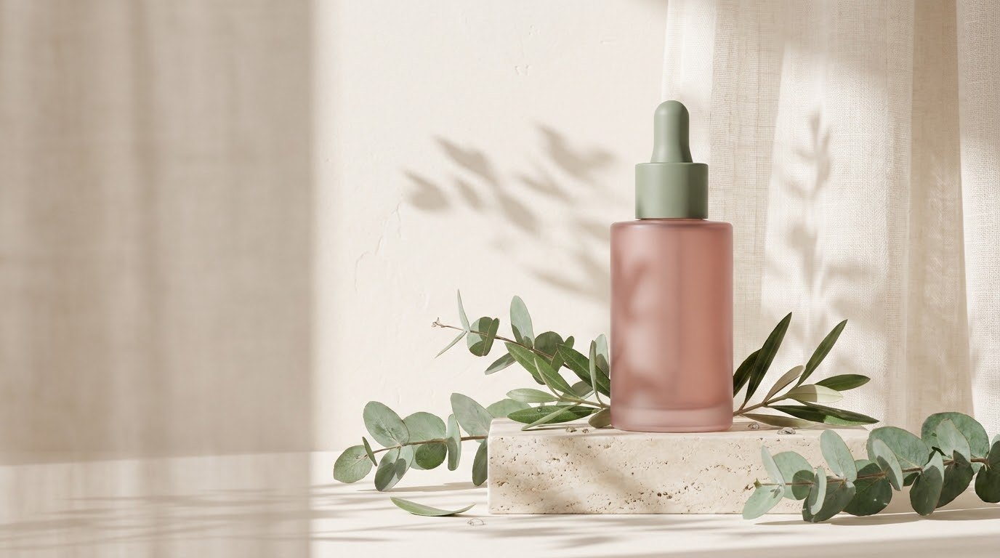
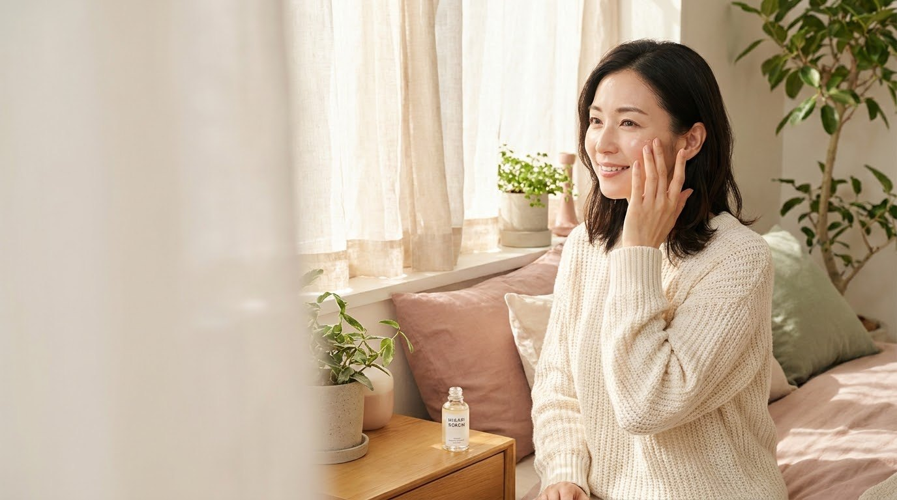
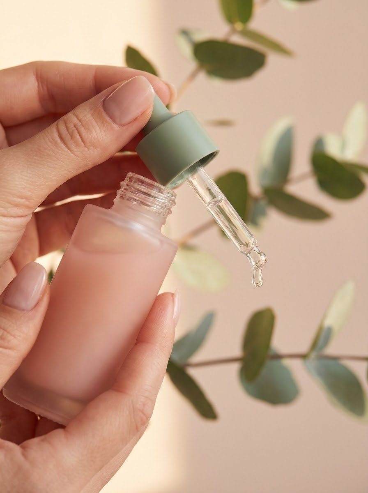
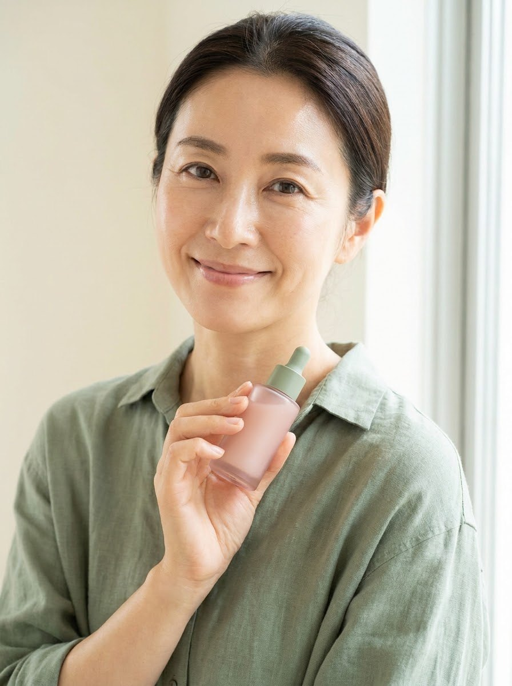
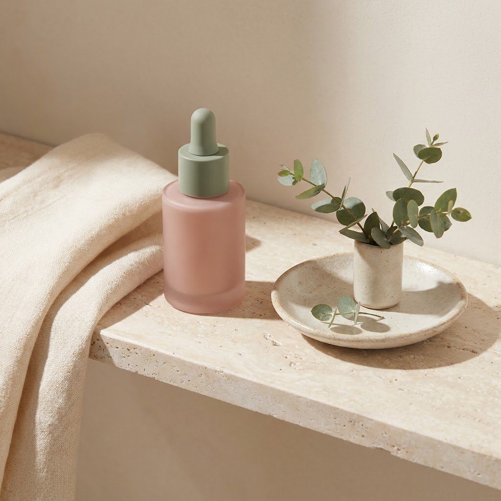
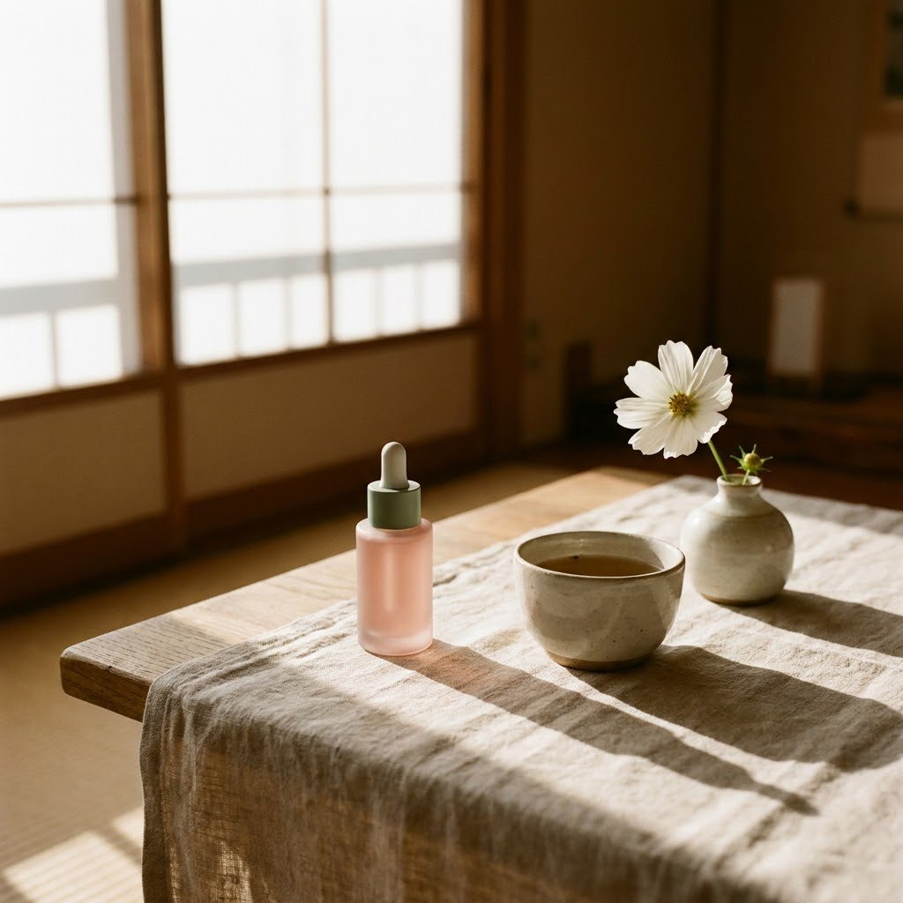
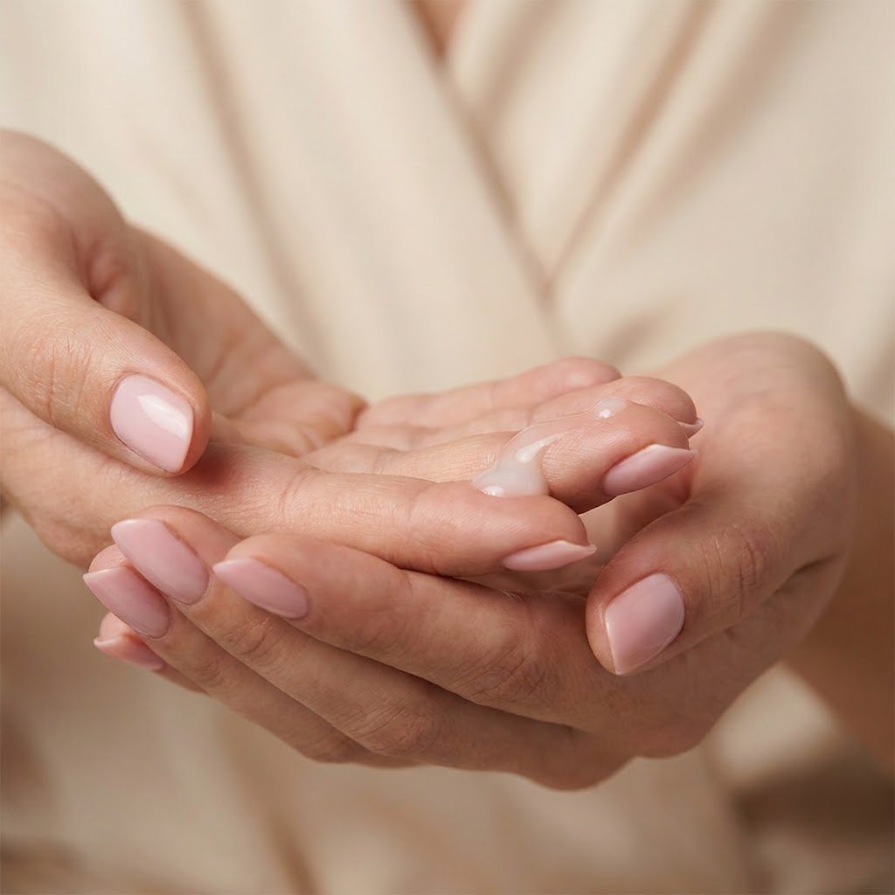
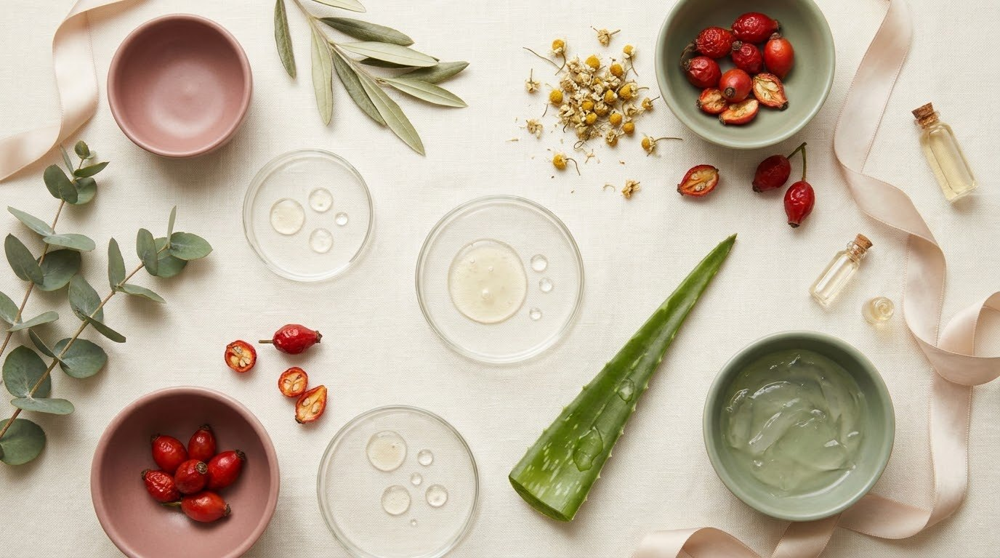
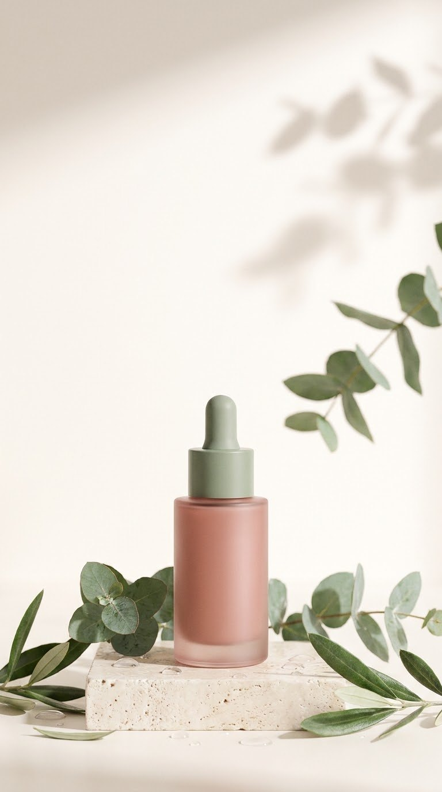

朝の鏡が、
少したのしみになる。
忙しい毎日でも、ひと塗りでうるおいを。
植物のちからに着目した、
やさしい使い心地の美容液です。
定期縛りはありません。いつでもお休みできます。
定期縛りはありません。いつでもお休みできます。

Concept
ブランドの想い
毎朝のお手入れに、
ほのかな光を。
年齢を重ねるほど、肌の調子は
日によって変わるもの。
だからこそ、朝のお手入れが
自分の肌に目を向ける
ちいさなひとときになるように。
Lueurは、植物のちからに着目した、
やさしい使い心地の美容液です。
「ほのかな光」
Worries
こんなこと、
ありませんか？
夕方になると、
肌がつっぱる
朝の時間がなくて、
お手入れが続かない
季節の変わり目に、
肌がゆらぎやすい
そのお悩み、“足りないうるおい”が
ひとつの理由かもしれません。
Skin Check
肌ゆらぎタイプ診断
4つの質問に答えるだけ。
あなたに合うLueurの使い方を
ご提案します。
※この診断は、使い方の目安をご案内するものです。
肌の状態を判定するものではありません。
今朝の肌、どんな感じ？
直感で選んでください。
Reasons
Lueurが選ばれる、
3つの理由

Reason01
植物由来の保湿成分を、
ていねいに配合
植物のちからに着目し、うるおいを与える保湿成分を選んで配合しました。
みずみずしく肌になじみ、しっとりとした使い心地です。

Reason02
化粧水のあと、
これ1本で朝のお手入れ完了
化粧水のあとに、この美容液をなじませるだけ。
あわただしい朝でも、無理なく続けやすいステップです。

Reason03
ゆらぎやすい肌にも
使いやすい処方
肌の調子が変わりやすい時期にも使いやすいよう、
やさしい使い心地を大切にした処方です。
Botanical
植物のめぐみに、
目を向けて。

毎日、肌にふれるものだから。
Lueurは、植物のちからに着目し、
やさしい使い心地を大切にした
ものづくりを心がけています。
使い心地
Texture
とろみがあるのに、
みずみずしい。
手のひらでのばすと、肌にすっとなじみます。
How to use
使い方
Morning Routineいつもの朝に、ひとつだけ。
洗顔・化粧水
いつもどおり洗顔し、
化粧水で肌を整えます。
美容液を2〜3プッシュ
手のひらに2〜3プッシュとります。
手のひらで包みこむ
顔全体になじませ、
手のひらでやさしく包みこみます。
For you
こんな方に
30s30代
仕事に家事に、
朝はいつも大いそがし。
シンプルなお手入れを続けたい方に
40s40代
季節の変わり目に、
肌のゆらぎを感じはじめた方に
50s50代
自分のための時間を、
ていねいにたのしみたい方に
Trial
はじめての方へ、
お試しサイズのご案内
まずはお試しサイズで、
使い心地をゆっくりたしかめてください。
- 定期縛りはありません
- 自動で定期便に切り替わることはありません
- いつでもお休みできます
Q&A
よくある質問
- Q敏感肌でも使えますか？
- Aゆらぎやすい肌にも使いやすい処方ですが、すべての方に合うわけではありません。気になる方は、腕の内側などで試してからお使いください。
- Qお試しを申し込むと、自動で定期便になりますか？
- A自動で定期便に切り替わることはありません。定期縛りもなく、いつでもお休みできます。
- Q朝と夜、どちらに使えばいいですか？
- A朝・夜どちらでもお使いいただけます。化粧水のあとになじませてください。
